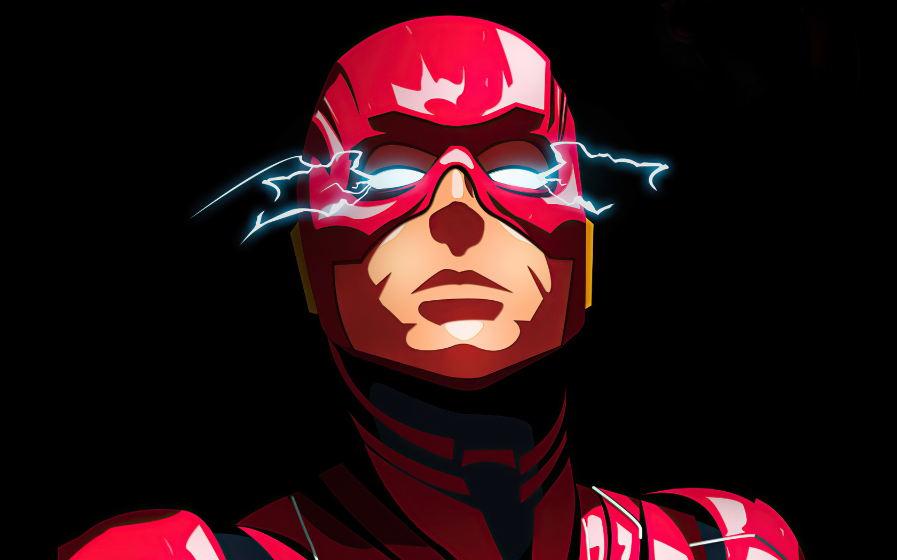

Flash
The Flash is a superhero appearing in American comic books published by DC Comics.
The character first appeared in Showcase #4, created by writer Robert Kanigher and penciler Carmine Infantino.
Barry Allen is a reinvention of the original Flash, Jay Garrick. Wikipedia
Significant other: Iris West
Notable aliases: Barry Allen, Barry Allen / Flash, MORE
TV shows: The Flash, Supergirl, Arrow, Crisis on Infinite Earths, MORE
Fictional universe: DC Universe
Creators: Robert Kanigher, Carmine Infantino